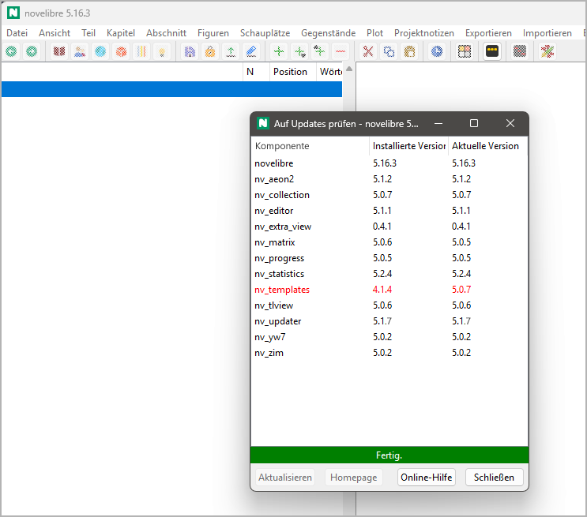

nv_updater
Benutzerhandbuch
Diese Seite gilt für die neueste Ausgabe von nv_updater. Sie können sie mit Hilfe > Update-Prüfer Online-Hilfe öffnen.
Das Plugin fügt dem novelibre-Extras-Menü den Eintrag Auf Updates prüfen hinzu, und dem Hilfe-Menü den Eintrag Update-Prüfer Online-Hilfe.
Die Update-Prüfung starten
Starten Sie die Update-Prüfung über das Hauptmenü: Extras > Auf Updates prüfen.
Es erscheint eine Liste mit installierten Softwaremodulen und ihren Versionsangaben. Listeneinträge veralteter Module sind rot eingefärbt.
Hinweis
Wenn keine Verbindung zum Repository hergestellt werden kann, wird die aktuelle Version als „unbekannt“ angegben.
Schaltflächen unterhalb der Modul-Liste
- Aktualisieren (oder Doppelklick auf einen Listeneintrag)
startet Ihren Webbrowser mit der Download-Adresse des ausgewählten Softwaremoduls, falls die installierte Version nicht mit der aktuellen Version übereinstimmt. Nachdem Sie diesen Befehl gegeben haben, färbt sich der Listeneintrag blau.
Wichtig
Das nv_updater-Plugin stößt nur den Download durch den System-Webbrowser an. Wenn ein Downloadverzeichnis vorgegeben ist, werden die Installationsdateien mit den Programmupdates dort abgelegt. Dann führen Sie die Installation wie gewohnt aus.
- Homepage
startet Ihren Webbrowser mit der Homepage des ausgewählten Softwaremoduls. Dort können Sie z.B. die Änderungshistorie (changelog) sehen.
- Online-Hilfe (oder F1)
startet Ihren Webbrowser mit dieser Seite des Benutzerhandbuchs.
- Schließen
schließt das Fenster des Updatemanagers und bricht laufende Versionsprüfungen ab.
Wichtig
Update-Installationen werden erst nach einem Neustart von novelibre wirksam.